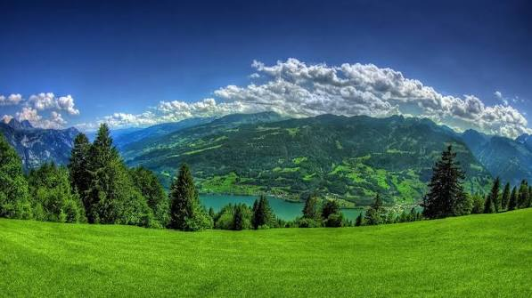

Welcome to our little corner of nature, where we celebrate the beauty of the world around us. We believe that every tree, river, mountain, and living creature plays an important role in making our planet extraordinary. Our goal is to inspire people to explore nature, understand its importance, and take simple steps to protect the environment. Through beautiful stories, helpful information, and a shared love for the outdoors, we hope to encourage a deeper connection with our planet. Together, we can appreciate nature today and help preserve its beauty for generations to come.

Relax and enjoy the peaceful sounds of nature, from singing birds to flowing water and gentle forest sounds.